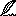
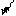

Klarigo pri la simboloj leksikografiaj
- Fakindikoj
- Mallongigoj
- sign*o, adici*o
- steleto markas radikojn Fundamentaj kaj oficialajn
- 
-
beletro, poezio

- biologio
- ☇
- elektroteĥniko aŭ elektroniko
![[Detaloj]](BILDOJ/detaloj.gif)
- Detaloj (butono por pluiri al pli detalaj
informoj)

- figuro (referenco al grafikaĵo)

-
filozofiaĵo
- ☢
- fiziko
- 
- GUI-aĵo
- ♖
- historio

- juro
- kinarto
- ¤
- komerco, negoco

-
komputado

- libroj, presarto, paleografio, termino filologia

-
malrekomendo

- matematikaĵo
- medicino
- Ω
- operaciumoj / operating systems
- ∏
- Programlingvoj ĝenerale (kaj
Paskalo speciale), tradukiloj / programming languages and
processing thereof

- retumado, telematiko
- ☺
- ridmieno, (duon)ŝerca rimarkigo

- teĥniko
- iru al la antaŭa paĝo de la leksikono (ĉe gvidata
trairo)
- iru al la indeksoj
- prezentu la instrukcion pri la uzo de la Leksikono
(ekde la kovrilpaĝo)
- a.K.
- antaŭ Kristo
- [B]
- vorto el la verkaro de
K. Bein (Kabe)
- ĉ.
- ĉirkaŭ
- ekz-e
- ekzemple
- fig.
- figuro
- i.a.
- inter aliaj, interalie
- jc
- jarcento
- kp
- komparu
- ktp
- kaj tiel plu
- Noto.
- Lingva, esperantologia noto pri
la termino.
- mll
- mallongigo
- pĝ
- paĝo
- PIV1
- la Plena
Ilustrita Vortaro [PIV1]
- PIV2
- la Nova
Plena Ilustrita Vortaro [PIV2]
- resp.
- respektive
- Rim.
- rimarkigo faka
- SPIV
- la
Suplemento [SPIV] al PIV1
- t.e.
- tio estas
- t.n.
- tiel nomata
- Var.
- variaĵo
- vd
- vidu
- Z
- Zamenhof